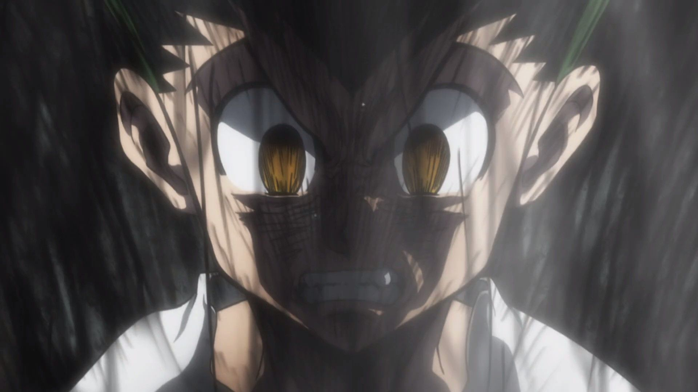

PERSONAL TOP 5 BEST ANIME SERIES
1. Garden of Words

genres: drama, romance
description:
On a rainy morning in Tokyo, Takao Akizuki, an aspiring shoemaker, decides to skip class to sketch designs in a beautiful garden. This is where he meets Yukari Yukino, a beautiful yet mysterious woman, for the very first time. Offering to make her new shoes, Takao continues to meet with Yukari throughout the rainy season, and without even realizing it, the two are able to alleviate the worries hidden in their hearts just by being with each other. However, their personal struggles have not disappeared completely, and as the end of the rainy season approaches, their relationship will be put to the test.
2. Your name

genres: drama, fantasy, romance
description:
High-schoolers Mitsuha and Taki are complete strangers living separate lives. But one night, they suddenly switch places. Mitsuha wakes up in Taki's body, and he in hers. This bizarre occurrence continues to happen randomly, and the two must adjust their lives around each other.
3. Hunter x Hunter
genres: adventure, fantasy
description:
For some unknown reason, Gon Freecss father left him as a baby long time ago. 12 years later Gon finds out that his father is a Hunter, a person that has a license to go almost anywhere in the world and do almost anything. Now, Gon will have to undergo many challenges to become a Hunter and to gather more information about his father.
4. Fullmetal alhemist: Brotherhood

genres: adventure, drama, comedy
description:
After their mother's death, Edward Elric and his younger brother, Alphonse, try using alchemy to bring her back to life. Unfortunately they do not fully take into account the law of equivalent exchange which requires a sacrifice of equal value to what one hopes to achieve. Not only do they fail to revive their mother but Edward loses an arm and a leg and Alphonse loses his entire body, forcing his soul to remain confined to an empty suit of armor. Seeking a way to restore their bodies, Edward becomes a state alchemist and the brothers begin a long search for the legendary Philosopher's Stone, an object purported to allow its users to ignore the law of equivalent exchange.